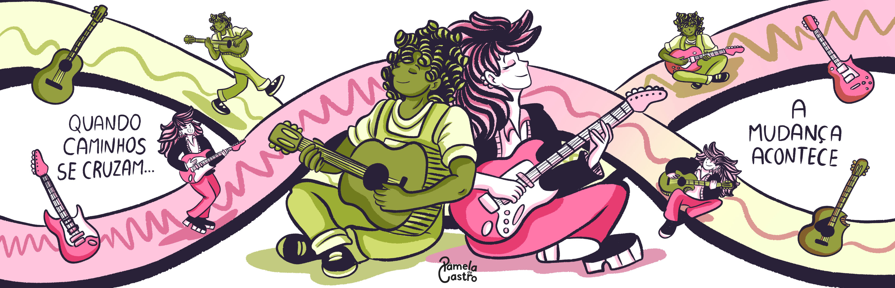

GUIA DE FREQUÊNCIAS:
GRAVES (Baixo)
MÉDIOS (Base/Voz)
AGUDOS (Solos)
Toque um instrumento ou cante para pintar ao redor da tirinha!
Esta HQ reage à música. Permita o acesso ao microfone para que as notas musicais se transformem em cores fluidas.